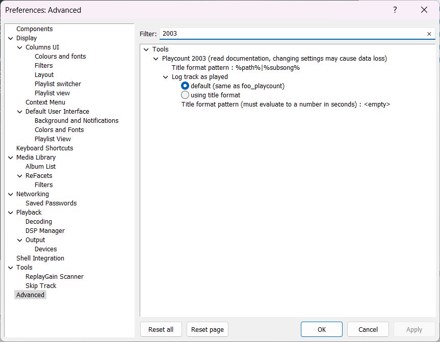

Playcount 2003#
Note
If you're using 0.3.0 or earlier with Advanced mode enabled, you must not update to
this version as it will cause data loss.
Updating from older versions in Simple mode is fine and existing data will be preserved.
Overview#
This component uses the same database backend that foo_playcount utilises
for logging plays but has many more advanced features and fewer limitations.
- Playcounts and dates can edited for any context menu selection.
- Data can be imported from file tags or fields provided by other components.
- Ratings up to 10 are supported.
- You can customise how long you have to listen before a play count is incremented.
- The current time is available via title formatting as a full date time string or Unix timestamp.
- First played, last played and added are all available as Unix timestamps.
- How records are bound to tracks can be configured in the
Advanced Preferences.
Advanced Preferences#
The first thing you'll want to do after installing this is check File>Preferences>Advanced>Tools>Playcount 2003.

Note
It's important that the title format pattern is decided on before starting as any change causes immediate data loss.
foobar2000 will prompt you to restart when changing that setting.
Title format pattern#
This is how database records are bound to your tracks. The default of %path%|%subsong% does
mean every track will have unique data.
Note
Using the default pattern, statistics can survive files being moved or copied when using file operations but cuesheets/other tracks with multiple chapters are not supported. If that is not acceptable, you should change it to a pattern that makes use of tags instead. You might consider a pattern like
%album artist%|%album%|%date%|%discnumber%|%artist%|%tracknumber%|%title%
Log track as played#
The default is to use the same rules as foo_playcount. This means you have to listen to at least 1 minute for it to count. If the track is shorter than one minute, you have to listen to all of it.
Now you can customise the time in seconds by entering a number or making it dynamic by using title formatting. If the title format pattern does not evaluate to a number, the track won't be logged.
You must take care to cover every scenario because there is no safety net. For example if you enter 30, no track shorter than that will ever count.
Therefore you should consider using %length_seconds%.
Example
$div(%length_seconds%,5)
$if(%length_seconds%,$min($div(%length_seconds%,2),30),)
$sub(%length_seconds%,1)
Note
For this last example, you cannot use %length_seconds% on its own because lengths may be rounded up
and the counter will never reach it.
Available fields#
These fields are available globally in foobar2000 in any playlist columns/search/3rd party panel.
%2003_now%
%2003_added%
%2003_first_played%
%2003_last_played%
%2003_now_ts%
%2003_added_ts%
%2003_first_played_ts%
%2003_last_played_ts%
%2003_playcount%
%2003_loved%
%2003_rating%
%2003_added_ago%
%2003_first_played_ago%
%2003_last_played_ago%
%2003_added_ago2%
%2003_first_played_ago2%
%2003_last_played_ago2%
Example
Added: %2003_added%
$crlf()
Added ago: %2003_added_ago%
$crlf()
Added ago2: %2003_added_ago2%
$crlf()
$crlf()
First: %2003_first_played%
$crlf()
First ago: %2003_first_played_ago%
$crlf()
First ago2: %2003_first_played_ago2%
$crlf()
$crlf()
Last: %2003_last_played%
$crlf()
Last ago: %2003_last_played_ago%
$crlf()
Last ago2: %2003_last_played_ago2%
$crlf()
$crlf()
Plays: %2003_playcount%
$crlf()
Loved: %2003_loved%
$crlf()
Rating: %2003_rating%

Ratings and loved values are set via the context menu for any playlist/library selection.
Added#
Added times are generated automatically for Media Library items only. This happens when foobar2000
starts or when new library items are added. If you clear data via the context menu, the Added field
will remain empty until the next restart or the next play or import.
Added dates can be edited via the context menu. Selecting this option will open an edit
dialog where you can update it using any valid date/time string in YYYY-MM-DD HH:MM:SS format.
The component will not check if selection items belong to the library when writing.
Note
Strictly speaking, the earliest supported date/time is 1970-01-01 00:00:01. As Unix timestamps are used
internally, zero is reserved for indicating not set. The latest value is some time in the year 2106
because 32bit unsigned integers are used for storage.
Editing#
The main Edit dialog found under the context menu > Playcount 2003>Edit now supports Presets and
you can import data from foo_playcount or foo_lastfm_playcount_sync as illustrated here:

In addition to Presets, you can fill in values manually or use title formatting to import data from tags/other
components.
Data import / export#
You can import/export data either via the main menu > Library>Playcount 2003 or use the context menu
on any playlist/library selection. When importing, files must be UTF8. With or without BOM is
fine. Exported files are always without BOM.
Data retention#
Database records are remembered for 4 weeks when not monitored as part of the Media Library or any loaded playlist. This behaviour is the same as foo_playcount.
Changes#
1.4#
- Fix stupid bug introduced in
1.3.
1.3#
- Internal improvements.
1.2#
- Bug fixes.
1.1#
- Minor bug fixes.
1.0#
- Remove
Advancedmode. The previous version with this is still available for download here. - Add menu items to increment/decrement ratings for the current selection.